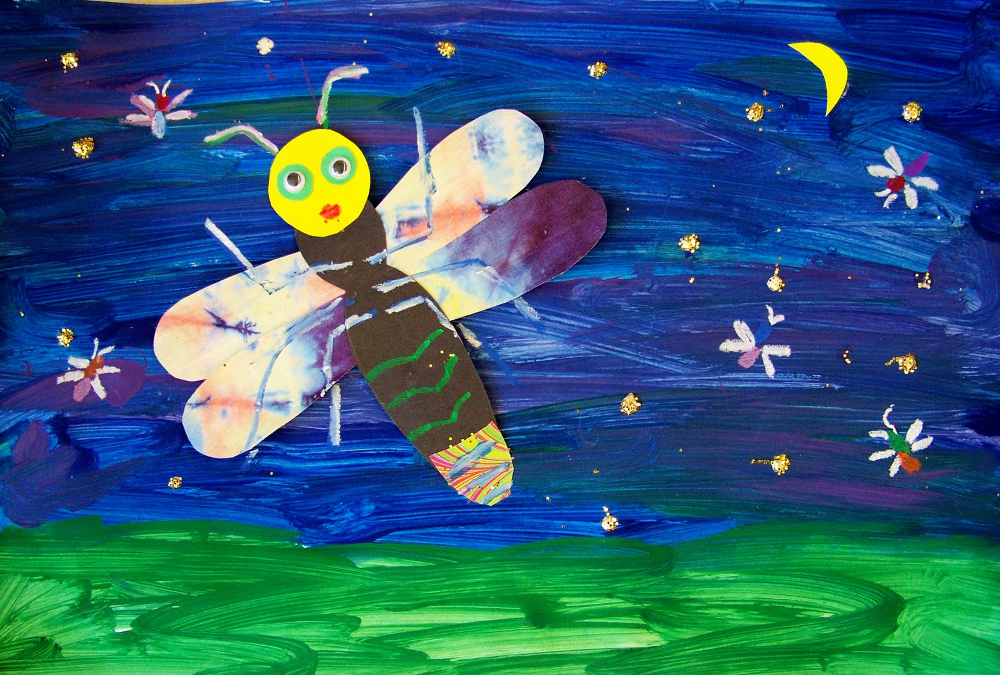

La Renaissance
If I were ever reborn, say the Buddhists were correct about Samsara, I want to be a firefly. A small bug, levitating, almost magically, in the night, providing light for those who need it most, providing a small sliver of hope that good things exist in the world.
The tired children after their long day of school, walking back to their dorms, would perhaps see me, as an adult firefly, dancing and waving wildly in areas not yet illuminated by lamps; weary adults, coming home from their excruciating exploitation faced at work, could perhaps see me and be reminded of their childhood, and emit a bleak, yet hopeful smile. A smile much like the bioluminescent light on my back.
I will emit a “cold light”, or a light that is not warm, by definition. Despite my apparent appeal for hope, I will not be the one to provide it, simply because of how efficient my process of creating light is. Not giving warmth means all the energy goes to providing light, which, harsh as it may sound, is the best course of action for a bug as small as me. I cannot afford to provide heat, as doing so would dim my light so much that it becomes invisible to the naked eye.
All this, of course, comes at a price, but I will be the sole soul to bear it. I will be born as a disgusting glow-worm in the equally disgusting and humid soil of late summer. My parents will abandon me by the time I hatch, but unlike a human, I will be gifted at birth with the ability to enjoy the endless feasts of slugs, snails, and worms using neurotoxins – the same tool used by special agents like James Bond, or double-oh-seven. If you think about it carefully, it’s not half bad, besides the disgusting form I would have to endure as a glow-worm for the majority of my existence. I can feast, and since my brain will not be anywhere as capable as a human’s, I will not be aware of the disgusting conditions I have put myself in. I will not be aware of the alien juices that drip down my body sourced from my last victim, nor will I be constrained by the morality of killing them. I simply satiate my hunger, and although I have not yet emitted light, such a purpose is, in essence, guaranteed to be satisfied in the future.
Even better, in such a way, I will not be indebted to anyone. No society, no parents, no family. Neither will there be any spectre to knock on my door at night to remind me of my inaction, nor any real humans to break it down. No one will scream at me for not smiling when I see them. No one will call me a failure for not somersaulting correctly. No one will have fights and force me to mediate them. Most importantly, no one will threaten me by taking away my money, nor will anyone instill the guilt of existence into me because I did not earn my existence, or because I depended on others since I was young, as, quite literally, I have justified every bite I take. I will never, never, never have to stand in the corner of my room, twisting my fingers against one another, as a monstrous entity screams into me that I do not deserve to exist, that chasing justice is so ridiculous, when my very existence is built on dirty money. I would not want to burrow into the ground (although, I imagine, as a glow-worm, I would be able, should I wish) from embarrassment when this happens in public, nor will I have the capabilities of shedding tears when this happens in private. Sure, my parents will not care for me, but they also do not feel as though I am indebted to them, nor will I. They brought me into this world out of a primal desire to continue passing their genes on, and I understand it completely. I do not mind the inconvenience it brings me, as I can enjoy my short, yet qualified, existence in exchange. Sure, the other glow-worms and fireflies will not care for me, but I also would not feel as though I am indebted to them. We simply coexist as harmonious entities, sharing no relationship other than perhaps a chirp when meeting in the dirt, or in the sky when we become adults. I will not be evaluated based on my contributions (which I know, regardless of what form I am, human or firefly, is equal to 0), nor will I feel a need to burn myself at the stake to fulfill a greater good. There is no greater good besides eating and becoming an adult, eventually emitting light for the passerby. No trauma, no bearing, no responsibility beyond my ability.
I will endure. Yes, I will. I will endure it all – digging in the dirt as a disgusting worm, eating other equally disgusting creatures to survive, spending weeks in a mud chamber to undergo metamorphosis – just to spend a few weeks as an adult. But not to reproduce. If a human biologist observes me, they will be shocked at how wrong their theory was, that they thought fireflies are busy during their adulthood to find mates and reproduce. If they carefully pick me up, trap me in a glass box, and observe me, unlike the other fireflies, I will not stop emitting light just because there are neither predators nor potential mates around me. I will scream against them using my light, I will cry out for freedom and justice, whatever that means for bugs, and I will blind their bigoted eyes with my lantern. I will charge at the walls of the glass box, again, and again, and again, until either it shatters or I die and become an outlier in their study. If a student (say, a graduate or PhD student) were studying me, they would be very annoyed at this terrible sample of a firefly, and eventually have to capture another one of my compatriots to make up for this statistically insignificant error. Indeed, what a terrible sample of a firefly I would be! But if being altruistic reflects a terrible human, as such is not human nature, then what difference would I make between the past life and this? Otherwise, say if an adult or a child were observing me, purely out of interest, they would be shocked out of their mind and perhaps posit the existence of consciousness in that tiny brain of mine. But they would be wrong. Unconscious, conscious, subconscious – I will ram into the wall, like how other fireflies ram into each other during mating season. I will endure.
Such an action is considered suicide, and for a human, suicides need justifications. For instance, the children in China have an abnormally high suicide rate, not only because they cannot see a future in a country where most people end up in factories or, at best, “996” jobs, but also to prove a point. In his first novella, Liu Cixin wrote about a fictional future where kids, repressed in schools and squeezed for living space by absurd population growth, go on flying motorbikes and crash into buildings in waves at a time, voluntarily, seemingly coordinating without any communication. Such mirrored the reality very closely. At least, the children, beaten, abused in their homes, thought in unison, at least my parents will care about me in the slightest fashion, that the only power I have over them is my own life, that when I take my own life, they will surely regret what they have done, and weep out of guilt. This will be my ultimate revenge, they thought. Yet what naïve children they are, that they think the same people who wish to determine their every detail in life, their future, their manner of speech, wish them to take nothing from their parents, wish them to be successful without any care or education at home, with them to not waste any time of their parents, and finally, regardless of what they do, speaks only badly of them in public – how naïve must one be to think that such people will care in the slightest if they took their own lives, or that they will have a sudden revelation when they die that they have indeed made terrible mistakes. Consider, did the Foxconn executives have a revelation when 14 of their Chinese employees threw themselves off of buildings in quick succession due to poor working conditions and low wages? The only thought that ever crossed their mind is perhaps the poor optics this would bring to the company, and the terrible, terrible loss of labour and surplus value that the shareholders must now “endure”. Similarly, these children’s parents were only scared of the shaming from their relatives and the lack of a free pension paid for by their children when they reach adulthood. As such, they shed crocodile tears. As such, the children died, in unison, in vain, in a lack of justification. We weep for these children, because of how unjustified their suicides are – yet not fireflies. Fireflies’ suicide does not have to be justified, because fireflies are not intelligent. I can ram into the glass wall, or into a tree, or into anything I wish at high enough speed, and when the particles that once composed of me burst due to the high kinetic energy on impact, my spirit will rise to enter Samsara once again, while my body, or whatever fragments are left of it is discarded, without any consideration of the reason behind my actions.
Apart from such a grim picture, if I get lucky and am allowed freedom during my short two weeks of adulthood, I will fly and emit light constantly. Other fireflies, say the elders, or perhaps some ancient fly scroll, will warn me that doing so will shorten my lifespan, that during the day, there is no point in emitting light. They will point to the sun, or perhaps show me the firefly version of a photo of one, and tell me that the sun will be a hundred thousand billion trillion times brighter than whatever I can even imagine, and it will perpetually outshine me, meaning no one will ever see my lantern go bright anyway. Then, when I insist upon brightening my lantern, they will see it, and they will scoff, calling it useless labour. However, they are the ones who deserve to be scoffed at, as foolish as they are! If they can scoff at me, then they must surely know that I am, in fact, emitting light during the day, meaning they are aware of the light I emit. So how can they possibly argue, then, that nobody will see the light in my lantern? What fools must it take to make such an argument! However, I must not be too harsh. After all, not all fireflies have had the honour of being a human in a past life, and therefore their lack of intelligence must be forgiven, as the human, even the most mediocre of them, has intelligence like the brightness of the sun, while the fireflies’ is no more than that of their own lanterns.
And the night – the night will be when I shine, quite literally. There is currently one song that is known to be outside of the solar system, and it was titled Dark Was the Night. Ironically, the man who sang that song was blind. For him, it was perpetually night, and never day. The night that the common folks fear is his normalcy. Yet, no blind man ever complained about the night, not even the man who sang this song – after all, not a word of lyrics was uttered by him, but we hear simply quiet hums, and the comforting sound of his guitar. Perhaps it was because they had never seen the day, and therefore could not appreciate how wonderful it was, nor how terrible the night was. It could also be argued, however, that because of how empty and dark the space was, darkness was indeed the true backdrop of the universe, and that the brightness that regular, seeing people observe is merely a façade that is provided to us, and taken for granted by us, because we happen to be in proximity of a main-sequence star. It would be romantic if such were the reason that NASA decided to send Dark Was the Night as the song recorded on the golden record to space, outside of our solar system, to potential aliens who may one day find it, for them to console us and tell us that we no longer have to fear being alone. However, as was any event in human history up until this point, the romantic explanation falls flat to crude reality, since the only reason that the song was selected for the golden record was because the company that held the copyrights to Here Comes The Sun, one of the most hopeful, uplifting, and popular songs in human history, decided to use its ability to block it from being shared with the universe. Thus, to pave the way for our greed, the angel of hope kneels to the devil of despair.
Thankfully, as a firefly, the space and its emptiness, the songs on the Golden Record, and whether they infringe copyrights don’t hold any significant meaning to me. I do not care what the aliens think about Earth or its inhabitants when they find the Golden Record. However, I do care about illuminating the night. In areas where the grasp of light pollution had not yet reached, I will flock my frail wings and brighten the night sky with a greenish-yellow glow, with all the might I possess. I cannot help the blind, but at least for those who can see, I will tell them that they are not alone in this moment, at this particular place. If other fireflies are near, they will surely join in this dance of joy and celebration, the celebration of existence and nothing more. No means test, no judgment, the fact that we, and the human watching, exist, should be enough to justify all this celebration and more. Fireflies cannot chirp, but we will be able to flutter our wings as loudly as possible, singing, at least from our perspective, about the beauty of the universe and how blessed we are to see it.
Eventually, of course, the dancing and singing will tire me out. Yet, I only have two weeks to live as an adult, before I drop dead and am squished by the cars and wheels of the industrial world. In such an occasion, I will fly to the nearest town and into the dark room of a child. If I am lucky, perhaps the child will not have slept, in which case I will fly around their little head, encouraging them to look around to spot my light. They might scream out of frustration, or out of fear of being caught not sleeping by their parents, whisper harshly for me to stop circling them. If not for the fact that fireflies cannot giggle, I surely would, out of the mischievous joy of fooling a cleverer species. Eventually, they will catch me, and I can only pray to the firefly Gods that they are gentle and do not crush me, accidentally or intentionally. Of course, by virtue of being captured by a child, I will likely be let go safe and sound. At the window, I would dim my glow, before lighting it up again, almost like a wink, as a token of my gratitude for their mercy, before leaving them forever. Perhaps, I would think as I fly, when the child grows up to be an adult, or, God forbid, if they are bullied or oppressed by others in life, they could think back on this moment, about the little game that the firefly played with them briefly when they were supposed to be asleep, and relish the joy in their memory, to keep their gentle and fragile soul from breaking.
Obviously, not all families are happy, and as such, not all children can go to bed on time. As Tolstoy said, “All happy families are alike; each unhappy family is unhappy in its own way”. Yet, in this troubled age, it seems even the devil ran out of creativity, and so unhappiness in families takes but a few forms: poverty, greed, viciousness, misfortune, or a combination of the above. However, if viciousness or greed is not involved somewhere in the process, one would find it very difficult to keep a child out of bed late. It is indeed tricky because viciousness comes wearing a plethora of different clothes. However, whatever form it takes, I wish to fly into the window that takes me to the unfortunate child, and land gently on their shoulder, so gently that the evil heart of the vicious one would not even allow themselves to discover my existence. I would embrace their neck in the biggest hug my tiny wings can manage, which would likely tickle them, the joy of which would remind them that, as the Persian proverb says, “this, too, shall pass”. No child, at least not under my wide wings and bright lantern, would have to act as the intermediate between the rest of their angry and vicious family, or prove themselves worthy of existing. They need only to feel the warmth of my embrace, and see the brightness of my lantern, and turn their frown and tears into a small smile, tugging at the corner of their mouths. They will be berated, unfortunately, for an extended period of time, but perhaps when they recall this trauma in their adulthood, and they lie awake at night, thinking about how good they would have been should their personality not have been shaped around this trauma, should they not have been depressed and normal, should they not have lost their ability to speak normally, or socialize normally, or act normally, or think normally, or have any confidence at all, or all of the above, that they will recall me, on their shoulder, hugging them as tightly as possible. And perhaps that will make them spend a little less time on the vicious and traumatic parts of the world, and perhaps a little more time on the good, like that little firefly that hugged them and, quite literally, brightened their night when they were young. If this might come true for but one of the children, I will leave that house feeling as much pride as a firefly can feel for itself, and hopefully, the child will be asleep, too.
I will visit the adults, too. I will fly as high as I can near a skyscraper and sneak into an open window, reminding the tired workers inside of a childhood dream that they once lost. I will hover over the fields, where peasants and farmers worked, and do my best to help them see the fruits of their labour. I will fly into the mines and be the light that saves the cowered miners by helping them spot critical failures. I will fly into the coffin cubicles, the cage homes. I will fly everywhere that I can in the two weeks that I get to, enjoying the fresh air, but more so the smiles that I will bring to the faces of people, the smiles that I never got to see or have in my past life. When people see me, they will, perhaps, consider holding their promises or doing good to their compatriots and fellow humans, who will, and I believe this with absolute certainty, reciprocate the kind gestures. When that day arrives, all will smile with genuine happiness from their hearts, and the plastered, disingenuous smiles that people wear at all times, the mock shock that they pretend to suffer from when they shove responsibility away from them, and other things that I find more disgusting than the worms I ate when I was not yet an adult firefly, will all disappear like fog being blew away by a strong spring breeze.
Then, after all is done and the two weeks pass, I will get on the highest leaf on the highest branch I can find and dim my lantern. I will look out at the town where I have sown the seeds of transformation, and close my eyes with satisfaction, perhaps forever. I will even smile, if fireflies are capable of smiling, by simply the knowledge that I owe nothing to anyone, and that, despite not needing to, I have been useful to the people around me. A smile that a child who has endured trauma and suffers from depression can never produce. A smile that I will never hold in this life.
So, come, then. Help me die. Shoot me in the head. Cut my neck open into a blood fountain. Poison my next meal. Put a plastic bag over my head and fill it with nitrogen, carbon monoxide, or argon gas. Shove me off a cliff, or into the ocean. I will take it all with grace. I will appreciate your aid in my metamorphosis into a beautiful, hopeful firefly.
Come, then. I am a useless child who knows nothing of his parents’ struggles. I am a useless child who cannot remediate his parents with each other, nor with their parents. I am a useless child who can only serve to bring pain to my family. I am a useless child who receives terrible grades, no matter how hard I try. I am a useless child who does not know how to take care of himself, despite only being 8 years old at the time. I am a useless child whose struggles are all fictional, and I have neither been through struggles nor any reason to be depressed. I am a useless child who seeks attention constantly. I am a useless child who cannot hold an interest, nor be genuinely interested in something. I am a useless child who breaks things all the time and expects my parents to clean up after me. I am a useless child who disappoints everyone around me. I am a useless child who cannot somersault. I am a useless child who tells the truth and cannot fake my respect towards people I don’t respect. I am a useless child who holds a ridiculous standard of morality and expects others to do the same. I am a useless child who cannot be trusted with money. I am a useless child who dares to wish to hold his parents to their words, be it of “taking care of your grandfather while you are abroad”, or of “I will never scream like that to you again”, or anything else, for that matter. I am a useless child. I am all these things and hundreds, hundreds, thousands, millions more things that they have described me to be, accurately. Come, then, end my pathetic existence. End my disgusting, idiotic, pimpled, overweight form, so I can become an equally disgusting glow-worm, which, differing from what I am now, at least will one day become a symbol for hope that will help others.
And I will visit my own grave as a firefly. I will not mourn, but be relieved, that society and my family have finally become free from my leeching, that my idiot self will not harm anyone anymore. I will do this before leaving swiftly, to visit all the children and adults in the world, before dying in loneliness on top of the highest leaf on the highest branch.
Come, kill me. A life like this cannot be worth living. Even if Samsara did not exist, even if I was going to face the eternal darkness, then let it come as lightning, as the king of kings, as the white legged steed, and as the man born in purple. Let it strike me so fast that I would not even have noticed before I slip into the darkness, for at least then, I would no longer have to bear the sins of my forefathers, no longer have to cut my flesh open and watch myself bleed over the white kitchen floor over issues that did not involve me, no longer have to understand that whatever I do, the genes inside me will always be that of a woman who loved a puppet, and a man who cared primarily for his reputation.
Come. I will embrace you, and your weapon, and your malice. I cannot take it anymore. I would rather be cut down than grow up wicked. When I stop breathing, and the last of the light leaves my eyes, and my lips curve in a bleak smile, as bleak as the light that I may emit in my next life – please do me a favour, and tell my mother, who might still be laughing over the idea of sending my grandfather to a nursing home out of spite for me.
Do not tell her I loved her. Do not tell her I regret killing myself.
Do not tell her I hated her, either.
Knock on the door in Beijing, in the tiny alleyway behind the main road, behind the bustling breakfast shop and disgusting garbage pile. Knock thrice, and when she opens the door, as she gets ready to go to work, tell her my fate. Tell her that:
Mom, I’m going to be a firefly.
-2025.11.27, Toronto ON, Tony Su
Art Credit: Doris
Click Me For Document Download as .docx File